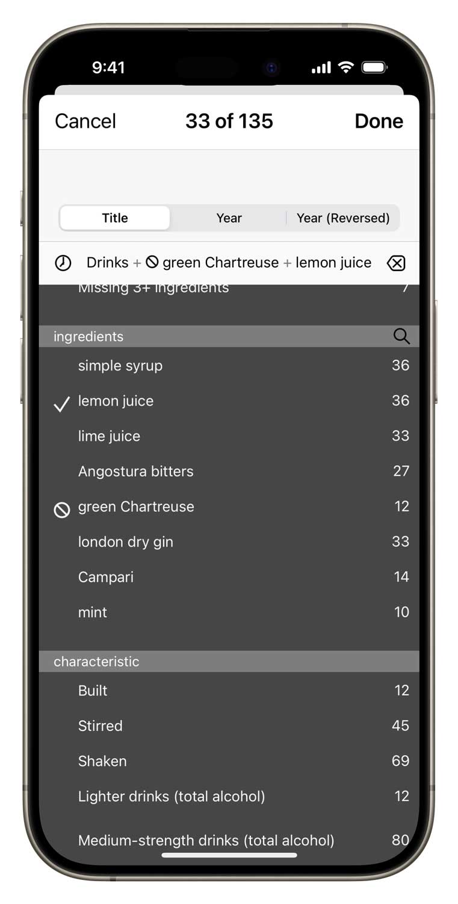
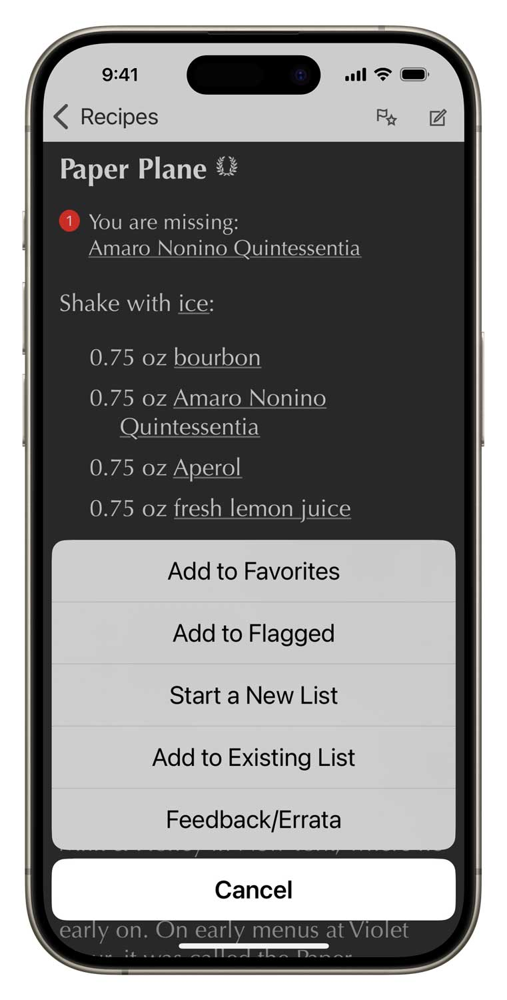

Modern Classics is the first independent, critical assessment of the original drinks of these recent decades. The drinks herein are researched, compiled, and updated by New York Times drinks writer, journalist and author Robert Simonson. This brutally honest collection identifies, justifies and presents the authoritative, verified and properly attributed.
★★★★★ by Chickpea87, May 5, 2020
This is exactly what I’ve been looking for!
Googling for a recipe is a lost cause—too much recipe clutter, too many poor quality recipes out there—and that’s when I loosely know what I want to make. With Modern Classics I love that I can easily search for my cocktail craving, scroll through what I can make (based on what I’ve got in), and/or easily see what I need to quickly pop to the store for, if I’m an ingredient or two short.
The best of the best
Modern Classics organizes and presents over 120 meticulously researched recipes in four categories: the modern classics, the objectively popular drinks that might yet achieve that status, certain drinks identified as critical favorites worthy of more attention, plus a collection of foundational recipes from the 1970s, 1980s and 1990s that helped set the stage for today’s cocktail renaissance.
Easy-to-use power
Search by name or ingredient just like in your address book. Surf through recipes and ingredients by tapping hyperlinks.
More surgical questions are just a few taps away: filter all the recipes by any combination of ingredients and keywords.
Ingredient aware
Our drink recipe apps have the smartest ingredient system. Simply check off what you have and the app will tell you which drinks you can make, including legit substitions.
★★★★★ by Raygan, May 10, 2017
As with all apps from this developer this is a polished app with many useful and thoughtful features, like a sync service for your inventory and detailed info about ingredients and substitutions. This app in particular suits my tastes well, as most of the drinks were new to me, and all were fun, modern, and tasty. Introduced me to my new favorite cocktail, the Revolver. Highly recommended.
Simple tools of great utility
Flag recipes you want to try, populate your favorites list, create a new list for planning the drinks for your next party. Add your own notes to any recipe.
Part of a talented family
Modern Classics inter-operates with its seven sibling recipes apps that you can add at any time.

Set up your free sync account and all these apps can share your ingredient inventory, lists and journal notes. In the same manner, you can have Total Tiki on both your iPhone and iPad, and they’ll stay in sync. You can even access your sync data with a web browser.